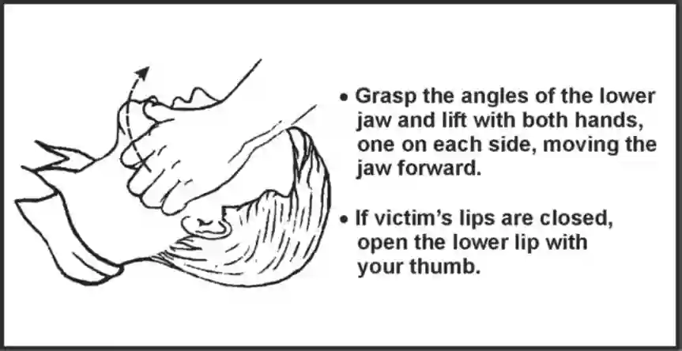
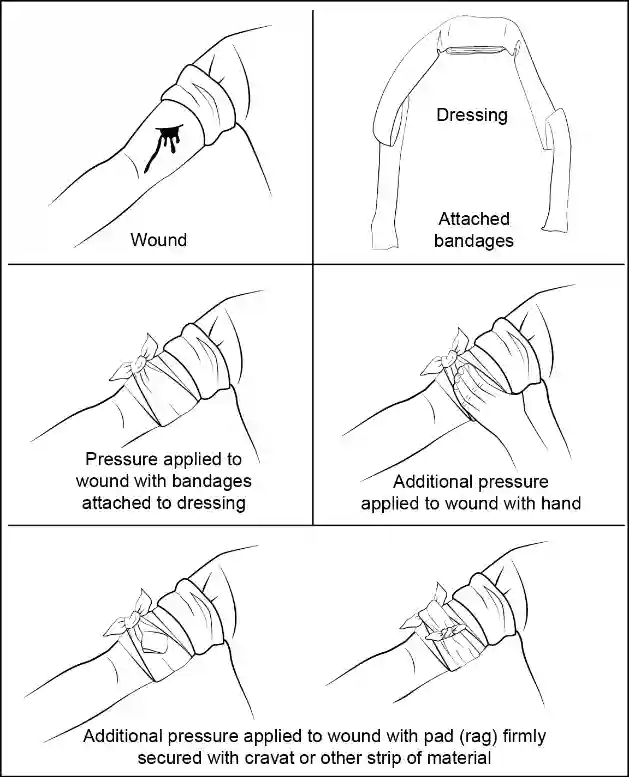
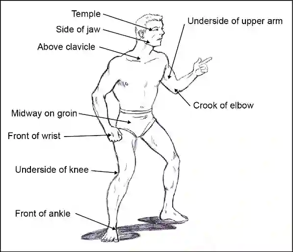
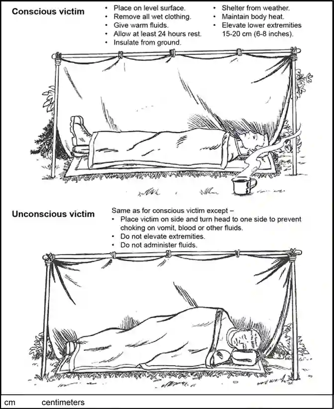
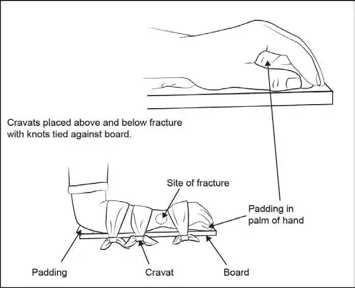
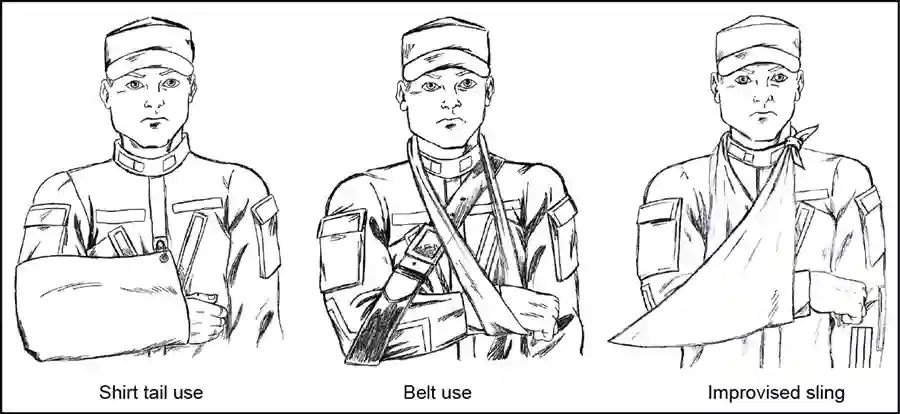
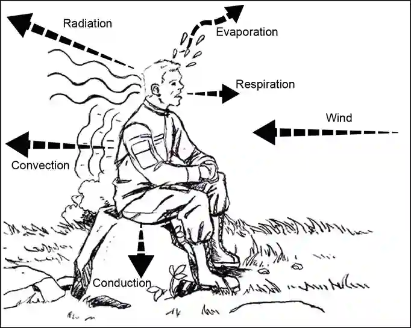

Isolated persons require knowledge of many different survival skills to return to friendly forces. This chapter will discuss the psychology of survival, treatment for shock, and survival medicine practices.
2-1. Excluding the enemy, medical related problems arising from combat and isolation pose the greatest threat to isolated personnel. Isolated personnel must understand the vast differences and transition of medical care that take place following combat, isolating events, and implementation of the isolated person's ISG/EPA. Isolated personnel must be able to perform fundamental survival medicine techniques throughout the duration of their isolation including during evasion, detention or captivity, and recovery. During combat operations, injured Soldiers follow Tactical Combat Casualty Care (TCCC) guidelines and protocols focused on the care of casualties in a combat or tactical environment at the point-of-injury. The TCCC program of instruction prepares Soldiers to provide self-aid or buddy-aid in the absence of a medical provider. Four transitions of medical care occur on the battlefield that includes isolation producing events.
2-2. Survival medicine requires isolated personnel to-
2-3. Survival medicine employs four techniques to facilitate isolated personnel performance of survival proficiencies. These techniques include-
PERSONAL HYGIENE AND SANITATION
2-4. Isolated persons can avoid many different kinds of illnesses and infections by practicing good sanitation and hygiene. Maintaining a clean body and living area will prevent the spread of germs and bacteria whether alone or in a group. It will also allow isolated persons to stay organized and protect items from animal contact.
2-5. Application of the following guidelines regarding personal health and hygiene will enable isolated personnel to safeguard personal health and the health of others while detained or captive.
2-6. Survival medicine capabilities in the Survival Kit. Prior to operations, personnel assess the survival kit to identify its survival medicine components. It is recommended that the Soldier rehearse appropriate survival medicine techniques using similar materials as those found in the actual survival kit. The survival medicine capabilities that should be considered for inclusion in the survival kit includes these items:
LIFESAVING STEPS
2-7. Once the Soldier has implemented their ISG/EPA, they become their own doctor, emergency medical technician, and surgeon; in an operational environment where they are being hunted, and without any of the medical capabilities that are typically needed to treat the recognized condition/symptoms. The isolated person's health is of primary importance; taking unnecessary risks, which could lead to injury, are prevented or mitigated. Once isolated, the fundamentals of the MARCH algorithm are applied through a flexible process that prioritizes actions relevant to physical, psychological, and environmental considerations that are continually assessed and prioritized for action by the isolated person.
2-8. The following list of actions enable assessment and lifesaving treatment of an isolated person/isolated personnel. The list is a guide that makes use of the MARCH algorithm. If the isolated person does not exhibit "massive hemorrhage", the priority for treatment follows the Airway, Respiration (breathing), Circulation, and Head/Hypothermia protocol.
Note. Steps 3 through 13 (from the Soldier's Manual of Common Tasks) are performed as self- aid for the isolated person and buddy-aid for the casualty/other isolated personnel.
BLEEDING
2-9. External, life-threatening bleeding. Bleeding is life threatening if any one of the following signs/symptoms are observed:
2-10. Control external bleeding. External bleeding falls into the following classifications:
2-11. If the casualty has severe, life-threatening bleeding from an extremity or has an amputation of an extremity, administer life-saving hemorrhage control by applying a combat application tourniquet (CAT) from the casualty's IFAK before moving the casualty. Personnel with life-threatening bleeding can bleed to death from a complete femoral artery and vein disruption within as little as three minutes. Isolated persons must control life-threatening bleeding immediately because replacement fluids are not available.
2-12. If a CAT is unavailable, apply an improvised tourniquet made from a rod (made from a jack handle, stick, scabbard, cleaning rod, pipe, dowel), a band of material at least 1-1/2 inches wide (made from a cravat, bandana, towel, ace bandage, shirt, nylon webbing, rifle sling.
Note. Belts, zip ties, should only be used as a last resort, and a securing mechanism as a constricting or compressing device to control arterial and venous blood flow to a damaged extremity for a short period of time.
2-13. The wide band of material is made into a loop that fits over the damaged limb, 2-3 inches above the site of arterial bleeding, and tied tightly with an overhand knot. Next, lay the rod across the overhand knot. The running ends of the loop are then used to tie another overhand knot on top of the rod forming a square knot with the rod through the center of the knot. The rod is then twisted, applying pressure circumferentially
around the limb tight enough to stop the arterial bleeding. Do not tighten the tourniquet more than necessary to stop the bleeding. In the case of amputation, dark oozing blood may continue for a short time. This is the blood trapped in the area between the wound and tourniquet. Fasten the tourniquet to the limb by looping the free ends of the tourniquet over the ends of the stick. Then bring the ends around the limb to prevent the stick from loosening. Tie them together on the side of the limb.
2-14. If bleeding remains, place a second tourniquet side by side to the first tourniquet. A tourniquet can be left in place up to two hours without damage to vessels, nerves, muscle or loss of limb. If isolated, the victim or buddy should release the pressure from the tourniquet after two hours, and then retighten if blood loss continues.
2-15. Ideally, the tourniquet will stop or considerably slow down the flow of arterial blood from the wound. As an open wound, the risk of infection is great. Before applying a pressure bandage, rinse the wound with sterile saline or clean water
Note. In isolation or captivity; alcohol, vinegar, natural honey, hydrogen peroxide, and bleach are also highly effective antiseptics. Once gauze or bandage is applied it must not be removed.
HYPOXIA
Hypoxia is the result of insufficient oxygen in the blood. It is a potentially deadly condition and one of the leading causes of cardiac arrest. Cardiac arrest is linked to an absence of circulation in the body, for any one of a number of reasons. For this reason, maintaining circulation is vital to moving oxygen to the tissues and carbon dioxide out of the body. Open an airway and maintain it by using the following steps:
Figure 2-1. Jaw Thrust Method
2-16. With the casualty's airway open, pinch their nose closed with your thumb and forefinger and blow two complete breaths into their lungs. Allow the lungs to deflate after the second inflation and perform the following:
2-17. If the forced breaths do not stimulate spontaneous breathing, maintain the casualty is breathing by performing mouth-to-mouth resuscitation.
2-18. There is danger of the victim vomiting during mouth-to-mouth resuscitation. Check the victim's mouth periodically for vomit and clear as needed.
2-19. If the casualty is unconscious, if respiratory rate is less than 2 in 15 seconds, and/or if the casualty is making snoring or gurgling sounds, insert a nasopharyngeal airway (NPA) from the casualty's IFAK. Remember these things when inserting the NPA:
Note: Cardiopulmonary resuscitation (CPR) may be necessary after cleaning the airway, but only after major bleeding is under control.
2-20. Continue to check for bleeding by performing a blood sweep. Control external bleeding by the application of direct pressure, indirect pressure, elevation, or digital ligation.
DIRECT PRESSURE
2-21. The most effective way to control external bleeding is by applying pressure directly over the wound. This pressure must not only be firm enough to stop the bleeding, but it must also be maintained long enough to "seal off" the damaged surface.
2-22. If bleeding continues after having applied direct pressure for 30 minutes, apply a pressure dressing. This dressing consists of a thick dressing of gauze or other suitable material applied directly over the wound and held in place with a tightly wrapped bandage. It should be tighter than an ordinary compression bandage but not so tight that it impairs

2-23. Circulation to the rest of the limb. Once you apply the dressing, do not remove it, even when the dressing becomes blood soaked. Leave the pressure dressing in place for 1 or 2 days, after which you can remove it and replace it with a smaller dressing. In a long-term survival environment, make fresh, daily dressing changes and inspect for signs of infection. Figure 2-2 shows applications for pressure dressings.
Figure 2-2. Application of a pressure dressing
2-24. The isolated person can make field expedient dressings if a medical kit is unavailable. The purpose of a dressing is to control bleeding, absorb wound secretions, and to prevent bacteria from entering the wound. Materials that make functional field expedient dressings include cloth from a shirt, undergarments, socks, bandanas, handkerchiefs, thin towels, bedding and feminine care absorbent pads. Cut these materials to proper size to cover the wound and sterilized before use. To sterilize, the isolated person can steam the material for five minutes or boil the material in water for ten full minutes at a rolling boil. If needed, the isolated person can clean and sanitize used bandages by boiling them, then reusing them if no other option exists.
Elevation
2-25. Raising an injured extremity as high as possible above the heart's level slows blood loss by aiding the return of blood to the heart and lowering the blood pressure at the wound. However, elevation alone will not completely control bleeding; apply direct pressure over the wound.
Pressure Points
2-26. A pressure point is a location where the main artery to the wound lies near the surface of the skin or where the artery passes directly over a bony prominence. Personnel can use digital pressure on a pressure point to slow arterial bleeding until a pressure dressing is applied. Pressure point control is not as effective

for controlling bleeding as direct pressure exerted on the wound. It is rare when a single major compressible artery supplies a damaged vessel.
Use caution when applying pressure to the neck. Too much pressure for too long may cause unconsciousness or death. Never place a tourniquet around the neck.
2-27. If an isolated person cannot remember the exact location of the pressure points, they should follow this rule: Apply pressure at the end of the joint just above the injured area. On hands, feet, and head, this will be the wrist, ankle, and neck, respectively. Maintain pressure points by placing a round stick in the joint, bending the joint over the stick, and then keeping it tightly bent by lashing. Using this method to maintain pressure frees the hands to work in other areas. Figure 2-3 shows key body pressure points.
Figure 2-3. Key body pressure points
2-28. If the bleeding is on the head, above the ears, press the point just in front of the ear, in a direct line to the corner of the eyes.
2-29. If the lower part of the face is bleeding, press the point on the jaw bone halfway between the chin and the end of the jaw.
2-30. If bleeding is from the neck, press the point on the carotid artery, located between the Adam's Apple and neck muscles. Stopping bleeding from here is a matter of life and death.
2-31. If the bleeding is high on the arm, press the point just above the middle of the collar bone. If the bleeding is low on the arm, press the point in the fold opposite the elbow, on the inside of the arm.
2-32. There are two pressure points on the wrists. The first one is more common, where we normally feel our pulse. The other one is just alongside, down from the little finger.
2-33. If the bleeding is from the groin or thighs, find and press the femoral artery. It is located along the bikini line, half way between the hip and the groin. A lot of pressure is required to control the bleeding here, maybe even both your hands, due to the amount of blood that flows through this artery to supply oxygen to the legs.

2-34. The pressure point on the popliteal artery lies behind the knee. Press this to stop bleeding from the lower leg below the knee.
Digital Ligation
2-35. Slow down major bleeding by applying pressure with a finger or two on the bleeding end of the vein or artery. Maintain the pressure until the bleeding stops or slows down enough to apply a pressure bandage, and elevation.
ASSESS FOR BREATHING AND CHEST INJURIES
2-36. Fractured ribs are common, painful, and disabling. The isolated person will not have access to pain medications and must understand that the pain associated with rib injuries can lead to reduced movement and cough suppression which can contribute to formation of secondary chest infection. To treat fractured ribs -
Do not wrap a band snugly around the person's chest.
2-37. Flail chest. It is most commonly a result of serious blunt trauma (falling from a height, vehicle or aircraft wreck or other accident). Ribs are typically broken away from the sternum, or when two, three or more adjoining ribs are broken in two or more places. The condition will make breathing difficult and indicates possible internal bleeding. Detect "flail chest" by observing a section of ribs moving in and out opposite to the rest of the ribs during breathing due to air pressures. The isolated person can try applying a bulky dressing and wrapping it to immobilize.
2-38. Pneumothrax. This is a common injury in isolation where isolated personnel fall or suffer chest trauma associated with blast injuries, blunt trauma and penetrating trauma (sucking chest wound). Sucking chest wounds are recognized by the sucking noise and appearance of foam or bubbles in the wound. This condition requires application of an occlusive dressing to the entry and exit wounds immediately before serious respiratory and circulatory complications occur.
2-39. Ideally, the patient should attempt to exhale while holding the mouth and nose closed (the Valsalva maneuver) as the wound is closed. This inflates the lungs and reduces the air trapped in the pleural cavity. Frequently, a taped, airtight dressing is all that is needed, but sometimes it is necessary to suture the wound to make sure the wound is closed.
2-40. Begin rescue breathing as necessary to restore breathing and/or pulse (Cardiopulmonary Resuscitation (CPR).
BURNS
2-41. The following treatments are extreme measures and are only meant to be applied with extreme caution under real-world experiences. Burns sustained during military operations constitute a relatively small, but very real percentage (5%) of combat-related injuries. Even burns to a small surface area can be incapacitating for the casualty and strain the resources of deployed military medical units. It is crucial to remember that burns may represent only one of the casualty's traumatic injuries, particularly when an explosion is the mechanism of injury. Optimal treatment includes management of homeostatic changes related to the burn and associated traumatic injuries. Resuscitation of the burn casualty is generally the most challenging aspect of care during the first 48 hours following injury, and optimal care requires a concerted effort on the part of all providers involved during the evacuation and treatment process.
2-42. Dress all non-life threatening injuries and any bleeding that has not been addressed earlier with appropriate dressings. Also-
2-43. Once the fire is out, assess the damage and begin to treat the burns. Initiate MARCH (see page 2-1) and protect the casualty from shock and hypothermia. Cool the burning skin with cold water for 20 minutes if possible. For burns caused by white phosphorous, pick out the white phosphorous with tweezers; do not douse with water.
2-44. First-degree burns involve only the outer layer of the skin known as the epidermis. First-degree burns do not blister; they become very red and are quite painful. After about two to three days, the pain should subside and peeling of the skin will begin. Soaking in cool water helps with the pain.
2-45. Second-degree burns are known as superficial partial-thickness burns. These types of burns affect the upper layers of the dermis and have a tendency to swell and blister. They are more painful than first-degree burns. If you suspect a second-degree burn:
2-46. Third-degree burns or full-thickness burns involve all layers of the dermis. This type of burn causes a large amount of tissue damage and is extremely painful or painless if nerve damage has occurred. Skin will be leathery and dry and can appear black, white, or brown in color. Do not remove any embedded charred clothing or material. However, remove constrictive jewelry and unburned clothing from the area if they are not stuck on the burn. If you suspect a third-degree burn:
2-47. Be prepared to treat injured personnel for shock. If possible, elevate the burn above the heart to assist in reducing swelling and the likelihood or severity of shock. Staying hydrated will help control the loss of
body fluids. Isolated persons should replace salt by consuming the cooked eyes and blood of animals or adding 1/4 teaspoon of regular salt per quart of water.
2-48. Prevent/treat hypotension and hypoxia to prevent worsening of traumatic brain injury (TBI) and prevent/treat hypothermia.
HEAD INJURY
2-49. During Tactical Field Care, Soldiers assess their condition for an altered mental status. Soldiers with an altered mental status may use their weapons or radios inappropriately and may not be able to accurately assess their condition in relation to isolation criteria and implementation of their ISG/EPA. Injuries to the head pose additional problems related to brain damage and may interference with breathing and eating. Bleeding is more profuse in the face and head area, but infections are less likely. This makes it somewhat safer to close such wounds earlier to maintain function.
2-50. Most important in treating a head injury is maintaining proper airway control. The lack of oxygen to an injured brain can have very detrimental effects. An emergency airway puncture may be necessary if breathing becomes difficult due to obstruction of the upper airways. In the event of unconsciousness, keep the patient still and under close observation. Even in the face of mild or impending shock, keep the head level or even slightly elevated if there is reason to expect brain damage. Do not give fluids or morphine to unconscious persons.
2-51. Traumatic Brain Injury (TBI) is a common injury in isolation where isolated personnel fall or suffer head trauma associated with vehicle and aircraft crashes, blast injury, and blunt trauma. Hypotension (low blood pressure) and hypoxia (insufficient oxygen in the blood) manifest the condition with dizziness and fainting.
2-52. For a bleeding scalp, apply several dressings with your gloved hand. Press gently because the skull may be fractured. On examination, if you feel a depression, spongy area or bone fragments, DO NOT put direct pressure on the wound. Control bleeding with a gauze dressing and diffuse pressure.
2-53. The symptoms associated with mild brain injuries typically include short term memory loss, blurred vision, nausea, dizziness, extreme tiredness and possible neck pain or tenderness. Care for mild brain injury includes-
2-54. The symptoms associated with serious brain injury include-
2-55. Care for serious brain injury includes-
2-56. In a situation where a group of personnel are isolated, consideration should be given to removing all weapons and radios away from any casualty manifesting brain injury who is not alert and fully oriented to the tactical situation. The group must exercise the tenets of mission command and ensure that appropriate decisions about ISG/EPA, captivity, and detention are also implemented.
2-57. The individual isolated person with a brain injury should consider immediate movement to and occupation of a hide site to rest and relieve their condition.
2-58. Administer pain medications and antibiotics from the combat pill pack if available.
SHOCK
2-59. Monitor the patient for shock and treat as appropriate. Shock is a condition of the body that describes the physiologic condition where oxygen delivery to the tissues of the body is not enough to meet the metabolic demands of those tissues. Early detection will be the key to limiting the effects on the body. Signs and symptoms of shock include the following:
2-60. Anticipate shock in all injured personnel. Treat all injured persons as follows, regardless of what symptoms appear:
2-61. Assess shock in all victims as shown in figure 2-4.
Figure 2-4. Treatment of Shock
ILLNESS, INFECTION, SOFT TISSUE TRAUMA
2-62. Isolated persons will face debilitating illness, infection, and soft tissue trauma which can become life threatening during isolation when they are without adequate medical care and basic personal hygiene capabilities.
2-63. Table 2-1 on page 2-14 lists typical illnesses and infection, their signs and symptoms and treatment. Keep in mind that some of the treatments are extreme measures and only meant to be applied with extreme caution during actual isolation.

Table 2-1. Typical Illnesses, Infections, Causes and Treatments
Illness / Infection Signs and Symptoms Treatment
Beriberi
Lack of vitamin B-1 (Thiamine) includes the following symptoms: Tiredness, irritation, nausea, constipation, poor memory, numb toes, burning sensation in the feet, sore legs, calf muscle cramps, unsteady walk, difficulty in getting up from a squat, weakened heart, heart failure, bloating
Replace thiamine by eating thiamine rich foods including brown rice, whole grains, raw fruits & vegetables, legumes, seeds, nuts, yogurt, pork, beef, liver, brewer's yeast.
Body Lice
A small (1/16 inch) long insect that feeds on skin. Associated with wearing the same clothes for long periods without laundering, shared bedding, and close contact includes the following symptoms: Intense itching with deep scratches around shoulders, flanks, neck. Bites appear as small red pimples; may cause generalized skin rash.
Washing clothing and bedding in boiling water, treating clothing with 1% malathion powder or 10% DDT powder.
Conjunctivitis (Pinkeye)
Viral and bacterial pinkeye are contagious and spread very easily. Swelling of the eyelids. Itching or burning feeling of the eyelids. Swollen and tender areas in front of the ears. A lot of tearing. Clear or slightly thick, whitish drainage.
Keep the eyes clear of discharge. Do not patch the eyes. Since most pinkeye is caused by viruses for which there is usually no medical treatment, preventing its spread is important. Wash hands thoroughly to avoid spreading the infection. Avoid sharing an object, such as a washcloth or towel, with a person who has pinkeye can spread the infection. Viral pinkeye symptoms usually last 5 to 7 days but may last up to 3 weeks and can become ongoing or chronic.
Dysentery / Diarrhea
60% of isolated personnel will experience diarrhea Dysentery is a type of gastroenteritis that results in diarrhea with blood. Dysentery/Diarrhea is caused by infection with a parasitic amoeba or one of several bacteria types that includes the following symptoms: Bloody diarrhea, fever, stomach pain, rapid weight loss, can lead to death.
Rehydration through drinking, use of an intra-venous (IV) drip to replace lost fluids and antibiotics to control infection.
Prevented through cleanliness, wastewater treatment, and personal hygiene using boiling water. Limit intake to fluids only for 24 hours. Drink 1 cup of a strong solution of tea every two hours until the diarrhea slows or stops. The tannic acid in the tea helps to control diarrhea. Make a solution of one handful of ground chalk, charcoal, or dried bones and a canteen cup of treated water. An equal portion of apple pomace (solid remains after pressing for juice) or the rinds of citrus fruit add to the mixture will make it more effective. Take 2 tablespoons of the solution every two hours until the diarrhea slows or stops.
Table 2-1. Typical Illnesses, Infections, Causes and Treatments (continued)
Illness / Infection Signs and Symptoms Treatment
Fever
A fever is a temporary increase in body temperature, often due to an illness. Fever is a sign that something out of the ordinary is going on in the body. For an adult, a fever may be uncomfortable, but usually isn't a cause for concern unless it reaches 103 F (39.4 C) or higher. For infants and toddlers, a slightly elevated temperature may indicate a serious infection additional Fever signs and symptoms may include: Sweating Chills and shivering Headache Muscle aches Loss of appetite Irritability Dehydration General weakness
Sponge off with cool water or alcohol. Use a fan. If aspirin is taken, the dosage is two tablets every six hours. Weeping willow bark is one of the most well-known sources of salicin. Boil a palmful of green leaves in one cup of water for 10 minutes to create an astringent. Soak a clean cloth in this brew and apply it directly to boils, abscesses, carbuncles, and ulcers when no other medical treatment is available. Soak the bark scrapings off several twigs and soak them in one cup of hot water for 10 minutes for a bitter tasting anti-diarrhea drink. Take a few sips every 2 hours, and continue until the symptoms subside. Drink plenty of fluids.
Food Poisoning
Bacterial contamination of food sources has historically caused much more difficulty in survival situations than the ingestion of poisonous plants and animals. Food poisoning strikes when you eat food that is contaminated with bacteria, viruses or parasites or another toxin that has natural poisonous properties. Signs and symptoms include: Nausea Vomiting Watery or bloody diarrhea Abdominal pain and cramps Fever Signs and symptoms may start within hours after eating the contaminated food, or they may begin days or even weeks later. Sickness caused by food poisoning generally lasts from a few hours to several days.
Determine what made you sick and what you should do. Increase fluid intake to flush toxins from your body. Limit eating solid food Replace electrolytes Rest Wash / sterilize your hands and cooking utensils Properly store food Cook meat thoroughly Keep the casualty quiet, lying down, and drinking substantial quantities of water. Eat small amounts of fine, clean charcoal frequently. If detained or captive: If chalk is available, reduce it to powder, and eat to coat and soothe the intestines. Proper sanitation and personal hygiene will help prevent spreading infection.
Table 2-1. Typical Illnesses, Infections, Causes and Treatments (continued)
Illness / Infection Signs and Symptoms Treatment
Hepatitis
Inflammation of the liver, called "hepatitis", is caused by various viruses which are harder to cure than a bacteria like what causes the plague. There are several types of hepatitis. Water in the isolation environment often contains harmful microorganisms, bacteria and parasites that can cause a variety of ailments, such as giardia, dysentery, hepatitis, and hookworms. Contaminated food and/or water serve as the vehicle of transmission. Incubation runs 2 - 6 weeks, and the acute stage lasts 2 - 12 weeks with recovery being several weeks to several months
Force fluids; avoid strenuous exercises; abstain from alcohol; and thoroughly wash hands and utensils, bedding, and clothing. Boil water, Disinfection of fecal material may be necessary, and increasing vitamin B intake will help. Medicinal herbs that are effective against hepatitis include Coffee (Coffea arabica) at 500 mg per day (approx. 5 cups). Be careful not to take more than 1000 mg/day. Celandine (Chelidonium majus) is an herb that has aerial parts and roots that work against Hepatitis. For a tea, use 1 1/2 spoonfuls in boiling water and steep for 10 minutes.
Pneumonia
With pneumonia you generally have all the symptoms of flu, but also: High fever up to 105 F Coughing out greenish, yellow, or bloody mucus Chills that make you shake Feeling like you can't catch your breath, especially when you move around a lot Feeling very tired Low appetite Sharp or stabbing chest pain (you might feel it more when you cough or take a deep breath) Sweating a lot Fast breathing and heartbeat Lips and fingernails turning blue Confusion
Complete bed rest and aspirin. Willow provides aspirin like relief. Pleurisy root consumed as a tea of boiled roots treats pneumonia and the expulsion of phlegm. Deep-breathing exercises may be helpful to promote coughing up phlegm. Drinking plenty of fluids will help to loosen the phlegm. Hydrogen peroxide was successfully used as a pneumonia treatment in the 1920's
Table 2-1. Typical Illnesses, Infections, Causes and Treatments (continued)
Illness / Infection Signs and Symptoms Treatment
Tuberculosis
Caused by bacterial infection with the following symptoms: Coughing, initially bringing up yellow-green phlegm that becomes tinged with blood; low fever, chest pain, loss of appetite, increasingly severe lung symptoms, severe weight loss, a wasted appearance, can cause death.
Treated by antibiotics, rest, and good nutrition. Lungs are sometimes collapsed surgically so they can rest and heal.
Worms and intestinal parasites
Internal parasites enter the body through contaminated food and water. Undercooked meat is a common place for parasites to hide, as well as water and associated plants from contaminated lakes, ponds, or creeks. Never eat raw vegetables contaminated by raw sewage. Tapeworms can grow as long as 60 feet while living in the human intestine. There are currently more than 5,000 different species of tapeworm. Hookworms generally suck blood from your intestinal walls. Giardia. A single-celled parasite that is usually the result of drinking infected waters. It typically survives in chlorinated water and commonly lives in mountain streams. Blood flukes. They mature first in snails and then complete their life cycle by burrowing through human skin and swimming through veins. Blood flukes infect more than 200 million people. There are also other species of flukes found living in the liver, lungs, and pancreas. In the case of malaria, a new generation of parasitic microbugs will burst from a single red blood cell. Pinworms are the most common roundworm. Worldwide, roughly 209 million people are infected. The most common sign of pinworm infestation is anal itching at night, which is when the female pinworm migrates to the perineum to lay her eggs.
Salt water. Mix 4 tablespoons of salt into 1 quart of water. DO NOT repeat this treatment. Tobacco. Eat 1 to 1 1/2 cigarettes or approximately 1 teaspoon (pinch) of smokeless tobacco. The nicotine in the tobacco will kill or stun the worms long enough for your system to pass them. If the infestation is severe, repeat the treatment in 24 to 48 hours, but no sooner. Kerosene. Drink 2 tablespoons of kerosene, but no more. If necessary, you can repeat this treatment in 24 to 48 hours. Be careful not to inhale the fumes. They may cause lung irritation. Hot peppers. Add hot peppers to soup, rice, and meat dishes or eat them raw. For this treatment to be effective, make peppers a steady part of the diet. Garlic. Chop or crush four cloves, mix with one glass of liquid, and drink daily for 3 weeks.
IV - intravenous DDT - Dichlorodiphenyltrichloroethane
INFECTION
2-64. During isolation, including detention or captivity, consider all breaks in the skin contaminated, and treat them appropriately. Clean even superficial scratches with soap and water and treated with antiseptics, if available.
Basic treatment
2-65. Open wounds are serious in a survival situation, not only because of tissue damage and blood loss, but also because they may become infected. Bacteria on the object that made the wound, on the individual's skin and clothing, or on other foreign material or dirt that touches the wound may cause infection. By taking proper care of the wound, the isolated person reduces the chance of further contamination and promotes healing. Clean the wound as soon as possible by doing the following:
Open Treatment
2-66. The "open treatment" method is the safest way to manage wounds in survival situations. Leave the wound open to allow the drainage of any pus resulting from infection. As long as the wound can drain, it generally will not become life-threatening, regardless of how unpleasant it looks or smells. Cover the wound (including nerves, bone, and blood vessels) with a clean dressing. Place a bandage on the dressing to hold it in place. Change the dressing daily to check for infection.
2-67. Wounds, left open, heal by formation of infection resistant granulation tissue known as "proud flesh." This tissue is easily recognized by its moist red granular appearance, a good sign in any wound. A notable exception to "open treatment" is the early closure of facial wounds which interfere with breathing, eating, or drinking
Gaping Wounds
2-68. If a wound is gaping, you can bring the edges together with adhesive tape cut in the form of a "butterfly" or "dumbbell". Use this method with extreme caution in the absence of antibiotics. You must always allow for proper drainage of the wound to avoid infection. Immobilization in a position to favor adequate circulation, both to and from the wound, will typically hasten the healing of major wounds/lacerations.
Infections in Wounds
2-69. In a survival situation, some degree of wound infection is almost inevitable. Pain, swelling, and redness around the wound, increased temperature, and pus in the wound or on the dressing indicate infection is present. If the wound becomes infected, treat it as follows:
Use of Maggots
2-70. If you do not have antibiotics and the wound has become severely infected, does not heal, and ordinary debridement is impossible, consider maggot therapy. Maggots frequently infest deep open wounds. The natural tendency is to remove these maggots. But, they actually do a good job of cleansing a wound by removing dead tissue. Maggots exude calcium carbonate which alkalizes the wound and increases the destruction of bacteria and dead tissue by the body's white blood cells. A maggot's excretion also contains two chemicals (allantoin and urea) which stimulate growth of healthy tissue and hasten wound healing. Use the following process when using maggots.
Debridement
2-71. Debridement is the surgical removal of lacerated, devitalized, or contaminated tissue. The debridement of severe wounds may be necessary to minimize infection (particularly of the gas gangrene type) and to reduce septic (toxic) shock. In essence, debridement is the removal of foreign material and dead or dying tissue. The procedure requires skill and should be done by nonmedical personnel only in an emergency. If debridement is required, follow these general guidelines:
Suture
2-72. Despite the danger of infection, occasionally it may be necessary to suture a wound in order to control bleeding or increase the mobility of the patient. Procure thread from parachute lines, fabric, or clothing, and the wound closed by "suturing." If suturing is required, place the stitches individually and far enough apart to permit drainage of underlying parts. Do not worry about the cosmetic effect; just suture the tissue together. For a scalp wound, use hair to close it. Infection is less a danger in this area due to the rich blood supply. Remember that in most situations, it is imperative that the wound be left open and allowed to drain.
Medicinal Plants
2-73. In using plants for medical treatment, positive identification of the plants involved is as critical as when using them for food. Proper use of these plants is equally important. Many natural remedies work slower than the medicines you know. Therefore, start with smaller doses and allow more time for them to take effect.
The following remedies are for use only in a survival situation. Do not use them routinely as some can be potentially toxic and have serious long-term effects.
2-74. The following terms and their definitions are associated with medicinal plant use:
2-75. Survival medicine is practiced by isolated personnel to aid in their survival during isolation.
SURVIVAL MEDICINE PROPERTY
2-76. Prevent or reduce the effects of dysentery/diarrhea (Anti-diarrheal).
Preparation
2-77. Tannic acid is also found in the moist inner bark of hardwood trees. Boil the inner bark of a hardwood tree for two hours or more to release the tannic acid. Although this solution has a vile, taste and smell, it will stop most cases of diarrhea.
Treatment
2-78. Burns.
SURVIVAL MEDICINE PROPERTY
2-79. Prevent or reduce the effects of Fever (Anti-pyretic).
Preparation
2-80. Make poultice.
Treatment
SURVIVAL MEDICINE PROPERTY
2-81. Prevent or reduce the effects of Hemorrhage and Bleeding (including Anti-hemorrhagic, Anti- microbial, tissue regeneration, pain relief).
Preparation
Treatment
SURVIVAL MEDICINE PROPERTY
2-82. Prevent or reduce the effects of internal parasites and worms (Anti-helminthics).
Most treatment for worms or parasites are toxic. Therefore, all treatments should be used in moderation. DO NOT confuse Wild Carrot or Queen Anne's Lace with any of the Poison Hemlock family. Wild carrots and Queen Anne's Lace have hairy stems and stalk which is a very important identification element and separates the two carrots from several very deadly plants including Poison Hemlock (has smooth hollow stalks with purple blotches and no hairs on its stems), Water Hemlock and Fools Parsley. (Poison Hemlock, Water Hemlock and Fools Parsley smell nasty - just roll some leaves between your thumb and forefinger, and smell), while Wild carrot roots smell like carrots.
Preparation
Treatment
SURVIVAL MEDICINE PROPERTY
2-83. Prevent or reduce the growth of disease/infection (Anti-septic).
Preparation
Treatment
2-84. Isolated persons can benefit greatly from using plants as a food source, medical aid, and shelter building material; however, successful use of plants in a survival situation depends on positive identification. Knowing poisonous plants is as important as knowing edible plants. Knowing poisonous plants will help isolated personnel avoid sustaining injuries from them. Plants generally poison by-
2-85. Isolated persons must understand that poisoning from plants ranges from minor irritation to death. It is difficult to say how poisonous a plant is because-
2-86. The following are some common misconceptions about poisonous plants:
2-87. Certain plants are safe to eat in certain seasons or stages of growth but poisonous in other stages. For example, the leaves of the pokeweed are edible when it first starts to grow, but they soon become poisonous. Some plants and their fruits are safe to eat only when they are ripe. For example, the ripe fruit of the May apple is edible, but all other parts and the green fruit are poisonous. Some plants contain both edible and poisonous parts; potatoes and tomatoes are common plant foods, but their green parts are poisonous. Some plants become toxic after wilting. For example, when the black cherry starts to wilt, hydrocyanic acid develops. Specific preparation methods make some plants edible that are poisonous raw. The thinly sliced and thoroughly dried (drying may take a year) corms of the jack-in-the-pulpit are safe to eat, but they are poisonous if not thoroughly dried. Learn to identify and use plants before a survival situation.
RULES FOR AVOIDING POISONOUS PLANTS
2-88. If isolated persons have little or no knowledge of the local vegetation, they should use the rules to select plants for the Universal Edibility Test. Remember to avoid all mushrooms. Mushrooms identification is very difficult and must be precise-even more so than with other plants. Some mushrooms cause death very quickly, and some mushrooms have no known antidote. Two general types of mushroom poisoning are gastrointestinal and central nervous system. Avoid contact with or touching unidentified plants unnecessarily.
CONTACT DERMATITIS
2-89. Contact dermatitis from plants will usually cause the most trouble for an isolated person. The effects may be persistent, spread by scratching, and be particularly dangerous if there is contact in or around the eyes. The principal toxin of these plants is usually oil that gets on the skin upon contact with the plant. The oil can also get on equipment and then infect whoever touches the equipment. Never burn a contact poisonous plant, because the smoke may be as harmful as the plant. Isolated persons have a greater danger of being affected when they are overheated and sweating. The infection may be local or it may spread over the body. Symptoms may take from a few hours to several days to appear. Symptoms can include burning, reddening, itching, swelling, and blisters.
2-90. When isolated persons first have contact with the poisonous plants or when the first symptoms appear, they should try to remove the oil by washing with soap and cold water. If water is not available, they should wipe their skin repeatedly with dirt or sand. They should not use dirt if they have blisters. The dirt may break open the blisters and leave the body open to infection. After the removal of the oil, the area should be dried. The area can be washed with a tannic acid solution and jewelweed can be crushed and rubbed on the affected area to treat plant-caused rashes. Tannic acid can make from oak bark. Poisonous plants that cause contact dermatitis are-
INGESTION POISONING
2-91. Ingestion poisoning can be very serious and could lead to death very quickly. Isolated persons should not eat any plant unless they have positively identified it first. They should keep a log of all plants eaten and plants identified as inedible if tested.
2-92. Symptoms of ingestion poisoning can include nausea, vomiting, diarrhea, abdominal cramps, depressed heartbeat and respiration, headaches, hallucinations, dry mouth, unconsciousness, coma; which can lead to death. If plant poisoning is suspected, try to remove the poisonous material from the victim's mouth and stomach as soon as possible. If the victim is conscious, induce vomiting by tickling the back of the victim's throat or by giving the victim warm saltwater. If the victim is conscious, dilute the poison by administering large quantities of water or milk.
2-93. The following plants can cause ingestion poisoning if eaten:
SOFT TISSUE TRAUMA
2-94. Soldiers face many threats in hostile fire environments. Whether conducting large-scale combat operations, low-intensity conflicts, or operations other than war; isolated personnel may wait for hours, days, weeks or longer before professional health-care is available. It is important to understand the implications over the long run, of trauma and the potential for infection if not treated and properly cared for.
Blisters
2-95. Blisters are caused by friction and occur in areas where the epidermis is thick and tough enough to resist abrasion. At first there is a red, sore area called a hotspot. If the friction continues, the epidermis separates and fluid enters the space, causing a blister. The best treatment for blisters is to prevent them: make sure shoes/boots are properly fitted, keep your feet dry, wear two pairs of socks, check feet periodically, and stop at the first sign of rubbing. Apply a small piece of moleskin or athletic tape to areas that are causing problems.
2-96. The primary goal with blister treatment is to optimize comfort and continued activity, maximize prevention of infection, and prevent further blister enlargement. If a blister is smaller than a nickel, do not puncture it. Cut a doughnut shaped piece of moleskin and center it over the blister. The doughnut hole prevents the adhesive from sticking to the tender blister and ripping it away when the moleskin is changed.
2-97. If the blister is larger than a nickel, it is best to drain it. Drain the blister by washing your hands and the area around the blister to decrease the chance of infection. Begin by puncturing the blister with a small sterile object, such as a needle or a pin, to drain the blister of built-up fluid. The best covering for a blister to heal is the skin itself. Clean and wash the blister and cover it with a sterile dressing.
Boils
2-98. A boil is a localized infection in the skin that begins as a reddened, tender area. Over time, the area becomes firm, hard, and increasingly tender. Eventually, the center of the boil softens and becomes filled with infection-fighting white blood cells from the bloodstream to eradicate the infection. This collection of white blood cells, bacteria, and proteins is known as pus. Finally, the pus forms a head which can be opened or may spontaneously drain out through the surface of the skin. Pus enclosed within tissue is referred to as an abscess. A boil is also referred to as a skin abscess. Boils can occur anywhere on the body, including the trunk, extremities, buttocks, groin, or other areas. The signs and symptoms of boils include the following:
Treatment for boils includes the application of warm compresses to bring the boil to a head or use of the bottle suction method. Use the following process to perform the bottle suction method:
Fungal Infections
2-99. Keep the skin clean and dry, and expose the infected area to as much sunlight as possible. Do not scratch the affected area. Antifungal powders, lye soap, chlorine bleach, alcohol, vinegar, concentrated salt water, and iodine were used by Soldiers to treat fungal infections during the Vietnam War.
Facial Injury
2-100. Facial injuries are some of the most annoying and painful injuries-particularly injuries to the teeth and gums. Personnel should continue to clean and brush their teeth while isolated to prevent tooth decay and gingivitis. If a toothbrush is unavailable, make a chew stick by taking a small green stick, chewing the end, and using the fibers as a brush to clean the teeth. If tooth pain occurs, rinsing the mouth out with warm saltwater helps to soothe the pain. Personnel may also experience a painful mouth abscess. They can ease the pain and decrease the threat of infection by lancing the abscess and letting it drain. Other facial injuries may be soft tissue facial injuries such as abrasions, contusions, lacerations, and avulsions. Clean and cover the facial injury several times a day, which will help prevent infection and crusting over.
Eye Injury
2-101. If an injury to the eyes occurs, isolated personnel should know how to treat the injury to prevent loss of sight.
2-102. Snow blindness occurs when an isolated person spends time in an area where bright sunrays reflect off the ice crystals in the snow. The eyes will become red, scratchy, and watery. The casualty may have headaches and eye pain with light exposure. The treatment for snow blindness is to cover the eyes with a dark cloth until the symptoms disappear. To prevent snow blindness, ultraviolet (UV) protection rated sunglasses should be worn or improvise a pair of sunshades for the eyes. Putting soot under the eyes, helps reduce the shine and glare as well. This blinding affect can also occur when the sun's rays reflect off water and other surfaces; the treatment and prevention methods remain the same.
2-103. Should the isolated person incur an eye impalement; never remove any object from the eye unless it is required to assist in their survival. Use an eye shield to cover the eye from further injury or if the eye shield is not available, make a protective cover from a cup, a bandage, or a similar item. This covering will protect
the eye from further injury or movement. Cover both eyes because the eyes are sympathetic, and when one eye moves the other moves at the same time.
2-104. If chemicals or small objects get into the eye, flush the eyes with large amounts of water from inside the eye to the outside so the chemicals, etc. are not transferred from one eye and into the other.
BONE AND JOINT TRAUMA
2-105. The majority of isolated personnel will experience some form of bone or joint trauma during isolation. Broken bones are a serious survival emergency, removing the use of a limb and raising the risk of post-fracture infection. Additionally, the long term effects of detention and captivity highlight malnutrition and starvation's adverse impacts on bone health, bone quality, bone regeneration and decreased cortical strength.
Sprains
2-106. A sprain is an injury to a tendon or ligament in the body. Signs and symptoms associated with sprains include pain, swelling, bruising, and loss of functional movement. There may be a pop or a tear associated with the injury when it occurs. The treatment for sprains and strains are similar. When treating sprains, you should follow the letters in RICE.
2-107. RICE as defined-
Strains
2-108. Strains are an injury to the muscle or the tendon, the tissue that connects the muscle to the bone. Signs and symptoms of a strain typically include pain, muscle spasms, and muscle weakness. There can be swelling, cramping, inflammation and, in severe cases, some loss of muscle functions. Severe strains that partially or completely tear the muscle or the tendon can be very painful and disabling. Treatment follows the RICE algorithm used to treat sprains.
Fractures and Dislocations
2-109. Combat, isolating events, and accidents produces broken bones and compression fractures affecting the back. Broken bones should be treated early, before swelling complicates treatment. Perform the MARCH algorithm conditions first. Immobilize before moving, if possible, and finish treatment later.
2-110. There are basically two types of fractures: open and closed.
2-111. With an open (or compound) fracture, the bone protrudes through the skin and complicates the actual fracture with an open wound. In open fractures, the soft tissue injury must be treated and properly dressed before splinting. Any bone protruding from the wound should be cleaned with an antiseptic and kept moist. You should splint the injured area and continually monitor blood flow past the injury. Only reposition the break if there is no blood flow.
2-112. The closed fracture has no open wounds. The signs and symptoms of a closed fracture are pain, tenderness, discoloration, swelling deformity, loss of function, and grating (a sound or feeling that occurs when broken bone ends rub together). Under normal conditions, the treatment of a fracture is beyond the abilities of normal first aid. However, in survival medicine, the risk of potential bone deformities is outweighed by the necessity to hasten the healing process and return the limb to function to enable the return of the isolated person.
2-113. Dangers associated with the treatment of a fracture include severing or compression of a nerve or blood vessel at the site of fracture. For this reason minimum manipulation should be done, and only very cautiously. If the area below the break becomes numb, swollen, cool to the touch, or turning pale, and the casualty showing signs of shock, a major vessel may have been severed and this internal bleeding must be controlled. Reset the fracture and treat the casualty for shock and replace lost fluids.
2-114. Often during the treatment of fractures, traction (i.e. a slow, strong pull - not a tug) must be applied during the splinting process to facilitate healing. Fractures of the smaller bones (finger or hand) can usually be performed using hand traction. For larger bones and muscled areas, traction is applied by wedging the fractured leg or arm in the V-notch of a tree and pulling until the overriding edges of fractured bone are brought into line. Check the alignment against the other limb. Then splint and immobilize, keeping up the traction to ensure it does not slip back. A splint can be made from sticks, branches, parts of wreckage, driftwood, rolls of paper, and other rigid items.
2-115. Use field expedient methods to immobilize a fracture. (See figure 2-5). Once an injury is immobilized, assess the pulse to ensure proper blood flow to the injury. Take your pulse multiple times at the farthest part of the injury. When immobilizing a fracture, it is crucial to splint the joints above and below the fracture site to prevent the bone ends from moving. If the mid forearm is fractured, the wrist and the elbow should be splinted to keep the bone ends from moving and achieve proper healing. Immobilize a joint in a fixed neutral functional position. This position is neither completely straight nor completely flexed, but in a position about midway between. Splint the finger, to about the same position that the finger would attain at rest. Use large straight strips of cloth material, vines, or braided plant material to secure the splints. To aid in controlling swelling, the limb should be elevated repeatedly throughout the day.
Figure 2-5. Building a splint
2-116. Improperly aligned bones and separation of bone joints are called a dislocation. These misalignments can be extremely painful and can cause impairment of nerve or circulatory function below the area affected. An isolated person must place these joints back into alignment as quickly as possible. Signs and symptoms of dislocations are joint pain, tenderness, swelling, discoloration, limited range of motion, and joint deformity. Manual traction or the use of weight (body weight) to pull the bones is the safest and easiest for "resetting" a dislocation and allows for normal function and circulation. Without an X-ray, judge the proper

alignment by the look and feel of the joint and by comparing it to the joint on the opposite side. Immobilization is nothing more than splinting the dislocation after resetting. Figure 2-6 demonstrates the use of field expedient devices for an improvised sling.
Figure 2-6. Slings
BITES AND STINGS
2-117. Insects and related pests are hazards in a survival situation. They cause irritations and are often carriers of diseases that cause severe allergic reactions in some individuals. In many parts of the world, people can be exposed to serious, even fatal, diseases not encountered in the United States. Common insects and their hazards include the following:
2-118. Ticks. Ticks can carry and transmit diseases, such as Rocky Mountain spotted fever, common in many parts of the United States. They also transmit Lyme disease. Take care to remove the whole tick. Use tweezers if available. Grasp the tick where the mouthparts are attached to the skin and pull up with steady, even pressure. Do not twist or jerk the tick. Do not squeeze the tick's body. Wash hands after touching the tick. Clean the tick wound daily until healed.
2-119. Mosquitoes. Mosquitoes may carry malaria, dengue, and many other diseases.
2-120. Flies. Flies can spread disease from contact with infectious sources. They are carriers of sleeping sickness, typhoid, cholera, and dysentery.
2-121. Fleas. Fleas can transmit plague.
2-122. Lice. Lice can transmit typhus and relapsing fever.
2-123. The best method of preventing bites and stings is to be aware of your environment and the insects in the area. If insects cannot be avoided, wrap your face with a bandana, use netting, roll down your sleeves, wear gloves, and repellant.
2-124. If bitten or stung, do not scratch the bite or sting; it might become infected. Personnel should inspect their body at least once a day to ensure there are no insects attached to them. It is impossible to list the treatment for all the different types of bites and stings. However, bites and stings can generally be treated as follows:
2-125. Become familiar with available antibiotics and how to use them before deployment.
2-126. Make sure immunizations are up-to-date before deployment; this can prevent most common diseases carried by mosquitoes and some carried by flies.
2-127. Be aware that common fly-borne diseases are usually treatable with penicillin or erythromycin.
2-128. Be aware that most tick, flea, louse, and mite-borne diseases are treatable with tetracycline.

2-129. Be aware that most antibiotics come in 250-milligram or 500-milligram tablets. If you cannot remember the exact dose rate to treat a disease, two tablets, four times a day for 10 to 14 days will usually kill any bacteria.
SNAKEBITES
2-130. Deaths from snakebites are rare. More than one-half of snakebite victims have little or no poisoning, and only about one-quarter develop serious systemic poisoning. The primary concern in the treatment of snakebites is to limit the amount of eventual tissue destruction around the bite area. A bite wound, regardless of the type of animal that inflicted it, can become infected from bacteria in the animal's mouth. With venomous and nonvenomous snakebites, this local infection is responsible for a large part of the residual damage that results.
2-131. Snake venoms contain poisons that attack the victim's central nervous system (neurotoxins) and blood circulation (hemotoxins) as well as poisonous digestive enzymes (cytotoxins) that aid in digesting their prey. These poisons can cause a very large area of tissue death, leaving a large, open wound. This condition could lead to the need for eventual amputation if not treated. Shock and panic in a snakebite victim can also affect the person's recovery. Excitement, hysteria, and panic can speed up circulation, causing the body to absorb the toxin quickly. Signs of shock occur within the first 30 minutes after a bite.
2-132. Before isolated persons start treating a snakebite, they should determine whether the snake was venomous or nonvenomous. Bites from a nonvenomous snake will show rows of teeth marks. Bites from a venomous snake may have rows of teeth marks showing, but will have one or more distinctive puncture marks caused by fang penetration. Symptoms of a venomous bite may be spontaneous bleeding from the nose and anus, blood in the urine, pain at the site of the bite, and swelling at the site of the bite within a few minutes or up to 2 hours later. Breathing difficulty, paralysis, weakness, twitching, and numbness are also signs of neurotoxic venoms. These signs usually appear 1.5 to 2 hours after the bite. If personnel determine that a venomous snake bit an individual, use the following procedures:
ENVIRONMENTAL INJURY
2-133. The successful prevention and control of cold, heat and altitude injuries depend on vigorous command interest, the provision of adequate clothing, and a number of individual and group measures.
High altitude sickness
2-134. Isolated person's not acclimated to high altitude may experience several illnesses that could affect their body and require treatment. Rapid change of altitude-for example, going from sea level to high altitude- can cause loss of consciousness followed shortly by death. The typical person working in a high-altitude environment will need to acclimatize in order to prepare their body for functioning at altitude. Acclimatization is the process of physiologic adjustments made by the body's oxygen delivery system to the cells; this improves their hypoxic tolerance.
2-135. The first and maybe only sign of high-altitude illness is a headache. A high-altitude headache will have at least two of the following characteristics: bilateral, frontal, or frontal temporal; dull or pressing quality; mild or moderate in intensity; and aggravated by exertion, movement, straining coughing, or bending. Acute mountain sickness symptoms include headache plus one or more of the following: nausea, vomiting, fatigue, dizziness, and difficulty sleeping.
High-altitude Pulmonary Edema
2-136. High-altitude pulmonary edema is one of the most severe high-altitude illnesses. This illness can be so severe it can cause death. Treatment for high-altitude pulmonary edema involves limiting exertion, staying warm, and rapidly descending from altitude. Signs of high-altitude pulmonary edema onset involve loss of appetite, low energy level, coughing spasms, and a headache.
2-137. High-altitude cerebral edema is another risk at high altitudes that is serious. It is a severe high- altitude illness where the brain swells and stops functioning. This illness is so severe that it can cause death. Other than rest, hydration and descending to a lower altitude, further treatment is beyond the capabilities of nonmedical personnel.
Note. At high altitudes, the body will require more calories to counteract weight loss and acute loss of appetite.
HEAT INJURIES
2-138. In a very warm climate, personnel may experience heat injuries. Heat injuries can occur suddenly and, if not treated properly, can quickly incapacitate and prevent mission completion. Personnel should limit their time in the hot sun, cover exposed skin or wear sunscreen, remain hydrated, and take plenty of rest breaks. Follow this formula otherwise; heat cramps, heat exhaustion, and heatstroke may occur.
2-139. Heat cramps are muscle cramps in the arms, legs, and/or stomach. Other symptoms experienced may be wet skin and extreme thirst. The treatment for heat cramps involves resting in a cool, shaded area and loosening restrictive clothing. Personnel should slowly sip one quart of water per hour. Add one-fourth teaspoon salt to the water to help replace minerals lost through sweating.
2-140. If untreated, heat cramps can progress into heat exhaustion. With heat exhaustion, personnel may experience cool, moist, and clammy skin; a loss of appetite; a headache; excessive sweating; and weakness. They may also experience faintness, dizziness, nausea, and muscle cramps. The treatment for heat exhaustion involves resting in a cool, shaded area and loosening restrictive clothing. Personnel should pour cool water over the person and fan to increase the cooling effect of evaporation. They should also slowly sip at least one quart of water per hour to replace lost fluids. Elevating the legs will help.
2-141. Heatstroke is the most dangerous heat injury. The casualty will stop sweating and have hot, dry skin. They may experience a headache, dizziness, nausea, vomiting, and a rapid pulse and respiration. They may have seizures and mental confusion, and may collapse and lose consciousness. The treatment for heatstroke involves rapidly cooling victims by immersing them in cool water. If a water bath is unavailable, then douse
victims clothing with water making sure to cool the groin, the armpit, and the back and neck areas. Use caution to avoid overcooling the victims. If victims are conscious, have them consume one quart of water.
COLD INJURIES
2-142. In cold environments, personnel may succumb to different types of cold injuries that can cause incapacitation and permanent damage and make it difficult or impossible to reach mission success. To reduce the possibility of cold injuries-limit your time in the extreme cold, cover exposed skin, and use the buddy system to check for cold injuries. Proper layering of clothing along with staying dry and hydrated with warm fluids can reduce the risk of cold injuries. Heat transfers to and from the body through radiation, convection, conduction, evaporation, and respiration (see figure 2-7).
Figure 2-7. Heat transfer
2-143. Radiation is the transfer of heat waves from the body to the environment or from the environment back to the body. It is the primary cause of heat loss. Radiation can contribute to heat loss of as 45 percent of body heat through exposed hands, feet, head, and neck, depending on the outside temperature. Use clothing to insulate exposed areas of the body. Convection is heat movement to or from an object by means of air or wind. The human body is always warming a thin layer of air next to the skin. When this warm layer of air is removed by convection, the body cools down.
2-144. A major function of clothing is to keep a warm layer of air close to the body. By removing or disturbing this warm air layer, wind can reduce body temperature. Conduction is the transfer of heat from one object to another. Extreme examples of rapid heat transfer include deep frostbite and third-degree burns. In hot conditions, sitting on a cool rock in the shade can conduct some excess heat away from the body. Evaporation is the process by which liquid changes into vapor. Heat within the liquid escapes to the environment. The body uses this method to regulate its core temperature (sweat) in hot, dry climates.
2-145. Clothing made of lightweight materials (cotton or linen) which have an open weave absorb sweat, allow air to circulate around the body, and help evaporation. Respiration works on the combined processes of convection, evaporation, and radiation. Air inhaled when breathing is rarely the same temperature as the air in lungs.

Chilblains and Frostbite
2-146. You can identify Chilblains or frost nip by red, swollen, hot, tender, itching skin. Continued exposure to the cold could lead to infected skin lesions. The affected area usually responds well to locally applied warming (body heat). Do not rub or massage the area.
2-147. Frostbite, superficial and deep, are the next stages of cold injuries personnel should be aware of and treat if signs appear. Superficial frostbite will produce redness and blistering within twenty four to thirty six hours and potential shedding of skin. Deep frostbite will be preceded by superficial frostbite, but the skin will be painless and pale yellowish in color. The spot will appear wooden, waxy, or solid to the touch and blisters may form within twenty four to thirty six hours.
2-148. To treat frostbite personnel should not attempt to thaw the affected areas by placing them too close to an open flame. The loss of feeling in the affected limb could lead to a severe destruction of tissue. Instead, thaw the affected area using water that is between 99 and 109° Fahrenheit (F) [(37 and 43° Celsius (C)]. Keep the tissue warm; decrease constricted clothing but increase exercise and insulation. Protect the affected area from further injury.
Immersion Foot
2-149. Immersion foot is caused by the foot being repeatedly exposed to wet, warm or cold conditions. A isolated person's mobility can be affected in a severe case of immersion foot. The affected areas will be cold and numb. As the feet warm up, they may begin to feel hot with burning, shooting pains. In an advanced stage of immersion foot, the affected skin will be bluish and pale in color. The distal pulse will weaken, and blistering and swelling may occur. Casualties may also experience heat hemorrhaging and potential gangrene.
2-150. To treat immersion foot, gradually warm the affected area by exposing it to warm air. Do not massage or moisten the skin. Make sure to protect the affected area from trauma, dry the feet, and avoid walking. Personnel can prevent immersion foot by changing out of wet socks throughout the day. Washing and drying the feet daily also helps.
Hypothermia
2-151. Hypothermia is one of the most dangerous cold injuries personnel can experience. It can occur rapidly, and the temperatures do not have to be very cold to contract hypothermia. Personnel are predisposed to hypothermia because of lack of food, potential dehydration, and little rest. Symptoms of hypothermia are coldness, wetness, and uncontrollable shivering. The body's core temperature will drop below 95° F (35° C).
2-152. The victim's movements can become uncoordinated, and unconsciousness may occur. Shock and coma may occur as the body temperature drops. To treat hypothermia, get victims out of wet clothing and into dry clothing, and have them slowly consume warm fluids. Begin to warm the body evenly and immediately. Keep victims dry and protect them from the elements. For severe hypothermia, quickly stabilize the victim's body temperature-this can include bare skin-on-skin contact inside a sleeping bag-and then prevent further heat loss.
Dehydration
2-153. The body continually loses water to supports its processes. A person typically loses 1.5 liters of water a day through urine. Rapid fluid loss may also come from vomiting and diarrhea (severe diarrhea can increase fluid loss at up to 25 quarts in a 24 hour period). Another large source of water loss in our bodies is through sweating, water is also lost from our body through breathing. Exposure to extreme hot and cold climate conditions and high altitudes expedite water loss. In extreme hot climates, the body can lose up to 3.5 quarts of water per hour when exposed to the elements. Additionally, intense activity burns, and illness, particularly the type that results in diarrhea, increases risk of dehydration.
2-154. To prevent dehydration, isolated persons should avoid or limit work during the hottest hours of the day. Sweat-not water-should be rationed when water is limited. If water is plentiful, drink enough water to ensure a steady urine output throughout the day. However, over-hydration can cause low serum sodium levels that can lead to death. Increase water intake in extreme climates. The body uses water more efficiently
when small amounts of water is consumed at regular intervals. Isolated persons always drink water when eating. Personnel acclimated to the environment require less water to maintain hydration.
2-155. Do not use alcoholic beverages, urine, blood, and seawater as water substitutes. Alcohol causes dehydration and impairs physical and mental abilities. Urine contains harmful toxins the body is attempting to excrete. It is also comprised of about 2 percent salt. Blood is salty and contains proteins, and therefore requires water to digest. It is considered a food and may transmit disease is consumed without cooking it first. Seawater is comprised of about 4 percent salt and results in dehydration.
2-156. Common signs and symptoms of dehydration include-
2-157. Signs and symptoms can be assessed to approximate the degree of dehydration personnel are experiencing:
INGESTION POISONING
2-158. Poisons can come from misidentified plants, animals, toxic water sources, toxic fungi, and chemicals. Poisons can enter the body through four means- eyes, nose, mouth and skin contact. The treatments for poison ingestion under field conditions include inducing vomiting and taking about 1 gram (0.04 ounce) of activated charcoal. Activated charcoal will attach and absorb the poison and carry it out of the gastrointestinal system. Activated can be made from a wide range of carbon rich materials like wood, coal, bones, coconut shells, nut shells and peat. The first step in making activated charcoal is to take the material and bring it to a temperature between 600-900 degrees Fahrenheit in a survival fire. Burn the material for about 4 1/2 hours. Cool the burnt material, crush it into a fine powder, and use for survival medicine remedies, and water filtration.
2-159. In some cases, a laxative may be required to help the activated charcoal work to its full potential. If the poison is an acid, an alkali, or a petroleum product, vomiting should be avoided because the substance can burn the esophagus. These types of products can also be inhaled into the lungs during vomiting, causing
pneumonia. Aggressively hydrate the body with clean, treated potable water to prevent renal failure and dilute the poison in the victim's system.
SANITATION AND HYGIENE
2-160. Application of the following simple guidelines regarding personal health and hygiene will enable the isolated person to safeguard personal health and the health of others while detained or captive.
2-161. Stay clean (daily regimen) by-
AVOIDING ILLNESS
2-162. Isolated personnel can avoid many different kinds of illnesses and infections by practicing good sanitation and hygiene. Maintaining a clean body and living area will prevent the spread of germs and bacteria whether alone or in a group. It will also allow isolated persons to stay organized and protect items from animal contact.
2-163. Rules for avoiding illness:
Note. Purify all water obtained from natural sources before consumption, if possible.
2-164. Application of the following simple guidelines regarding personal hygiene will enable isolated persons to safeguard personal health and the health of others:
INTESTINAL PARASITES
2-165. Though seldom fatal, worms are significant as they can lower an individual's general resistance to other illnesses. Common identifiers of worms include severe rectal itching, insomnia, and restlessness. Prevention can be a simple and readily obtainable goal. Undercooked or contaminated food, poor sanitation, and infected water sources are main causes of intestinal parasites and worms.
2-166. Eat hot peppers as treatment as they contain certain substances chemically similar to morphine. They are effective as a counterirritant for decreasing bowel activity. Grind pumpkin seeds and mix with water creating a "medicinal" porridge or make a cup of tea made from one to two grams (about 1/2 to 1 ounce) of thyme and drink several times a day.
2-167. Honey makes an ideal topical wound ointment to reduce infection and promote healing. Its hypertonicity, low pH, and inhibins provide antimicrobial activity against many types of bacteria and at least two types of fungi.